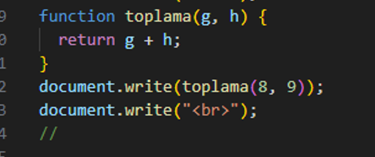
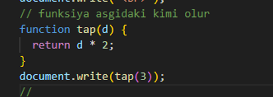

Parametrli funksiyalar
Biz bundan əvvəlki mövzularda parametrsiz funksiya yaratmağı və
istifadə etməyi öyrənmişdik. Çətinlik və qarışıqlıq yaranmasın deyə
ilk olaraq yalnızca parametrsiz funksiyalara baxdıq. Çünki bir çox
yerdə parametrsiz funksiyaların istifadəsi vacib idi. Bu mövzumuzda
isə parametrli funksiyaları öyrənəcəyik
İlk öncə parametrli funksiyanın nə olduğunu anlamağa çalışaq.
Məsələn, riyaziyyatda adətən parametrli funksiyalardan istifadə
olunur. Məsələn: Y=f(x)=x*x;
Gördüyümüz kimi, əvvəlcə funksiyanı təyin edirik, bu funksiya x-in
kvadratını tapmaq üçün olan funksiyadır. Sonra isə funksiyaya
qiymətlər verib nəticəni hesablayırıq. Burada F(3) yazdıqda sadəcə x
olan yerlərə 3 yazılır və hesablama aparılır. Proqramlaşdırmada da
tamamilə eyni məntiqdən istifadə olunur. Aşağıdakı nümunəyə baxaq:
Nəticədə ədədin 2 qatını verən bir ədəd funksiya yaratmış oluruq.
Funksiyaya istədiyimiz sayda parametr daxil edə bilərik. Ancaq həmin parametrləri daxil edərkən mötərizə daxilində onları vergüllə ayırmalıyıq. Aşağıdakı nümunəyə baxaq:
Parametrli funksiyanı daha yaxşı anlamaq üçün müxtəlif nümunələr yazaq. Məsələn, aşağıdakı funksiya daxil olunan ədədin 2 qatını bizə verəcək:
